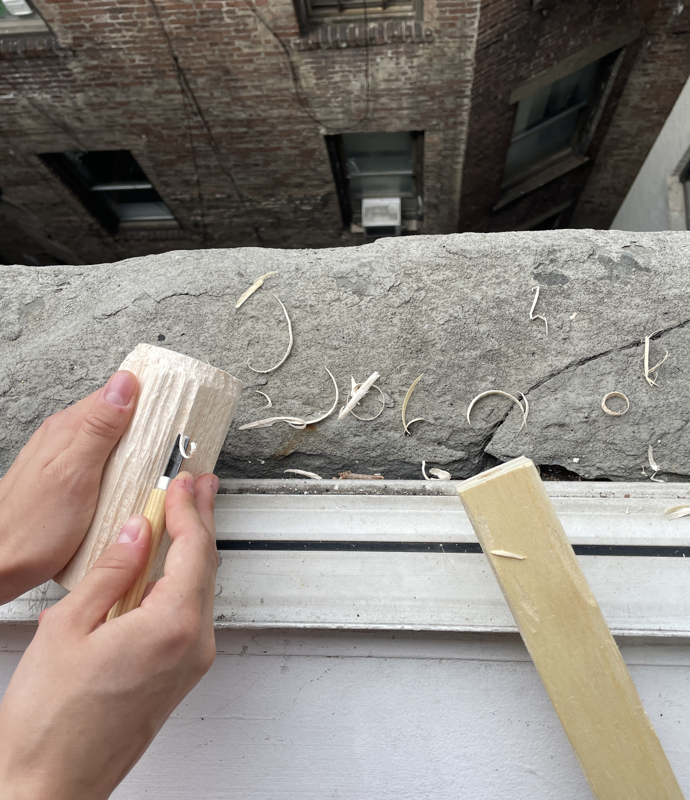

“I just carve out of here,” she says as she slides the window up next to her bed.
She lets the shreds of wood fall out the window and down five stories into the courtyard below.
I don’t feel too bad about it- I don’t think tenants have access to this side of the building.
It’s sort of poetic to see her there, sitting by the window carving wood.
“I like to do things the way they would’ve been done a long time ago.” I understand, there’s something about doing something so manual.
Somehow it feels like the pushes forward in what you are doing are even more dependent on the self.
Elle says that they think less when they are making art with their hands instead of that “hypothetical bullshit”.
At first I am confused, but they explain how just being able to focus on what is happening right in front of them
means they don’t get caught up in all the theoreticals that are tied to other kinds of art.

“The whole thing is like picking”, she tells me.
We both like to pick. It’s something I’m embarrassed of and something I want to stop doing. She wants to stop too.
She and I both pick our faces a lot, making our faces bleed when we accidentally go too deep.
I’m constantly picking my lips and my arms too. Maybe having a new outlet for something to do with my hands will help.
“Wait, stop,” she says as she laughs sheepishly, “I was gonna make a cup out of that.”
Suddenly I can see the progress she was making on the piece of wood I was practicing on.
The curved bottom leading towards a rim. I find it interesting how the form slowly begins to show itself.
That the shape is only apparent to the maker until suddenly it is apparent to everyone. I want to make a spoon, I think, but I need to get proper wood.
The new piece of wood I’m practicing carving on is a leg of our other roommate’s broken bed frame.
“It’s good to have your hand move along the wood, I think- I don’t actually know-” Elle continues on.
She taught herself how to wood carve last year for a class project. We would both be doing work by the measly light bulb into our dorm desks,
facing away from each other, and I would turn around to see her hunched over, chipping away at a piece of wood.
A few days later,
I go into Blick and buy myself some wood. I'll use Elle's carving tools at home. I go into the wood shop at school to cut
the piece I got in half. It's my first time using a big machine like that alone, so I'm a little nervous. My cut is easy though- straight down
the middle- so I know there's nothing really to be nervous about.
Armed with my new knowledge, I begin to carve my spoon. I'm less intimidated now, knowing Elle taught herself and that shes just a hallway
away if I need any guidance.
Talk soon, hopefully with a new wooden spoon in hand.
Want more information about wood carving? I can't help you.
But maybe Wikipedia can.